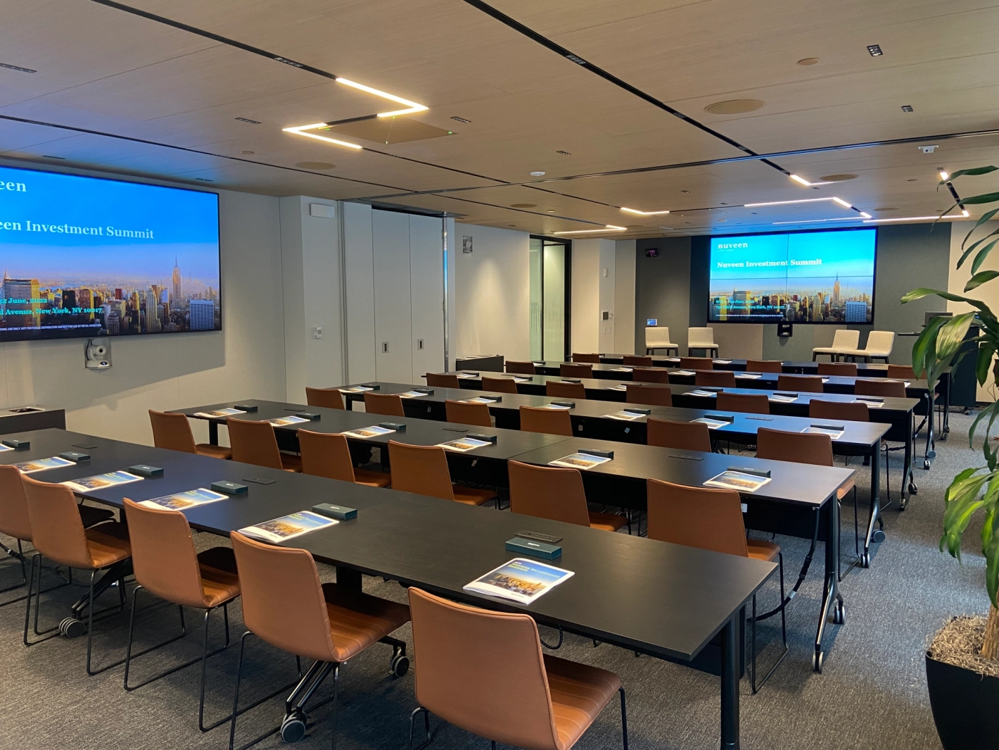

A research study on why authentic connection fails in coworking spaces — and three design directions to fix it.

Discovering that connection in coworking spaces fails not because people don’t want it — but because the spaces force performance instead of enabling authenticity.
“Believe it or not, there was probably less than 10 people for that whole building that came… (Japanese Stitching Event)… Less than 10 people.” — Industrious Worker
Industrious has great infrastructure. Connection isn’t happening anyway.
Industrious is a premium coworking space operating across major US cities. The physical product is strong — well-designed offices, high-quality amenities, professional support. But member retention depends on more than infrastructure. It depends on whether people feel they belong.
The challenge our team was given: why aren’t workers connecting more, and what would it take to change that? Industrious already had community events, a member app, and shared spaces designed for interaction. Yet engagement was low, events were sparsely attended, and members described working alongside strangers as largely transactional.
The business goal was clear: increase interaction between workers, foster belonging and engagement, and ultimately improve member retention. But the question wasn’t what to build — it was why the existing efforts weren’t working.
Understand the real barriers to authentic connection in shared workspaces — and identify design opportunities that address root causes, not surface symptoms.
Four-phase process, nine conversations, three patterns
We ran a structured research process — planning and recruitment, interviews, analysis and synthesis, then ideation. The 9 participants represented three groups with different relationships to shared workspaces: 3 Industrious members, 5 office-hybrid workers, and 1 workplace operations expert.
- 1Research planning and preparationWe defined our research goal, recruited participants across three profiles, and developed interview questions designed to surface both surface behavior and underlying need.
- 2Data collection — semi-structured interviewsNine interviews, each documented with participant snapshots and key quotes. We asked about daily work routines, how participants felt about shared spaces, what made them engage or disengage, and what connection in the workplace actually looked like for them.
- 3Analysis and synthesis — affinity mapping and pattern recognitionWe coded the data, clustered quotes and observations through affinity mapping, and looked for patterns across participant types. Three distinct themes emerged — each pointing to a different failure mode in how shared workspaces currently approach connection.
- 4Ideation and recommendationsFrom the three themes, we developed HMW statements and generated design directions. We prioritized interventions that worked with human behavior rather than against it — building on moments people naturally connect, rather than engineering new ones.
Three themes that explain why connection isn’t happening
The patterns across our nine interviews converged into three core insights. Each one reframed a common assumption about why people don’t engage in shared workspaces.
People avoid office events not because they don’t see the value — but because they’re unsure they can show up without performing. Forced networking and contextless small talk feel unsafe.
Workers aren’t choosing between focus and collaboration. They’re seeking an in-between state — mentally present but socially available — and current workplace design doesn’t support it.
When top-down systems fail to provide human warmth, people turn to bottom-up connections. Shared office spaces like Industrious can bridge the gap that individual employers can’t.
Theme 1: Can I be myself here?
The most consistent finding across participant types was the fear of forced performance. People weren’t hesitating because they didn’t value connection — they were hesitating because they didn’t know if they could show up authentically without being expected to network, make small talk with strangers, or perform a version of themselves.
“I am past trying to impress anyone — I don’t need to put on ears. I would rather go to a bar with one or two people I know really well where we can just be ourselves.”
— Industrious Member
Workers avoided events that required unclear social obligations. They preferred interactions that were topic-driven, utility-based, or embedded in shared tasks rather than explicitly social — short, task-adjacent moments at the coffee bar or cafeteria consistently outperformed programmed events.
Theme 2: The in-between state
Workers aren’t choosing between focus and collaboration. They’re seeking a way to stay mentally focused while remaining socially present — and current workplace design forces a binary choice that doesn’t reflect how people actually work.
Participants described wanting to be aware of what was happening around them — knowing who was there, being available for a quick question — without being interrupted or feeling socially obligated. Headphones became a proxy for “do not disturb” because there was no built-in spatial signal for that state. The environment offered only isolation or openness, nothing in between.
“It would be so much easier to just like go over and be like, ‘Hey, can you help me with this really quick.’”
— Hybrid Worker
Theme 3: Bottom-up warmth as the real driver
What kept people at their jobs — and invested in their workplace — wasn’t the company’s top-down community initiatives. It was the team, the familiarity, the small moments of peer recognition. When organizations failed to provide human warmth at the system level, people built it informally. Industrious sits in a unique position: it can be the infrastructure for cross-company, peer-driven connection that individual employers can’t provide.
“We have a good team. That’s why I’m still there. That’s it for me. It’s important to work with people that I can get along with.”
— Hybrid Worker
Three design directions built on how people naturally connect
Each recommendation maps directly to a research finding. The goal wasn’t to introduce new behaviors, but to design environments and systems that make existing connection behaviors easier, safer, and more likely to happen.
Research showed that small, daily moments — getting coffee, eating lunch, waiting for an elevator — are where workers naturally start conversations. Rather than programmed events, we proposed embedding conversation-starting mechanisms into these existing touchpoints.
Examples: a coffee bean voting display at the café (“Which bean next time? Kenya or Columbia”), a hand-illustrated local restaurant map on dining tables, a peer-activity screen in the elevator lobby. None of these require social commitment — they create a shared object of attention that lowers the barrier to the first word.
The existing Industrious app events feature felt like a newsletter — one-directional, managed by the company, disconnected from member interests. Members found it underused and impersonal.
We proposed shifting the events feature to allow members to host their own events around their actual interests. An interest-matching onboarding flow would connect people with similar hobbies or professional focuses, and event creation would be peer-initiated — making community-building something members do with each other using Industrious as the platform, not the host.
Current spatial design offers a binary: focus space (quiet, isolated) or collaboration space (open, social). Our research revealed a third need — workers who want ambient presence without social obligation. They want the energy of people nearby without the expectation to interact.
We proposed a “nuanced space” — a zone positioned between focus and collaboration that communicates a specific kind of availability through spatial design alone (arrangement, sightlines, partial enclosure). The environment itself would signal “I’m here, I’m aware, but I’m working” — without headphones or verbal signaling required.
What this project changed about how I approach research
- 1The problem people describe isn’t always the problem they have.Low event attendance looks like a marketing or awareness problem. It’s actually a psychological safety problem. Getting to that required letting go of the surface explanation and following the data further. Affinity mapping made the pattern visible in a way individual interviews hadn’t.
- 2Designing for behavior that already exists beats designing for behavior you want.Coffee conversations, elevator small talk, and lunch chats were already happening. The most effective recommendations weren’t about creating new behaviors — they were about lowering the barrier to behaviors people were already inclined toward.
- 3The in-between is always worth naming.Most design defaults to binary states — focused or collaborative, private or social. But people often live in the middle. If the environment forces a choice they don’t want to make, they disengage. Naming the in-between state gave us a frame that led directly to Recommendation 3.
- 4Research deliverables are also design artifacts.We were delivering findings to a real client. How we structured the insights, framed the themes, and presented the recommendations was itself a design problem — one that required the same attention to clarity and narrative as any visual deliverable.